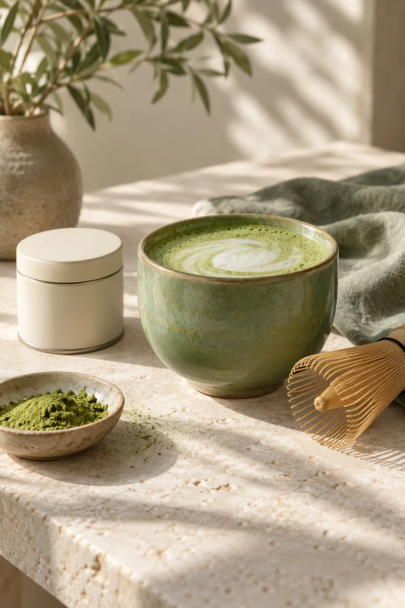
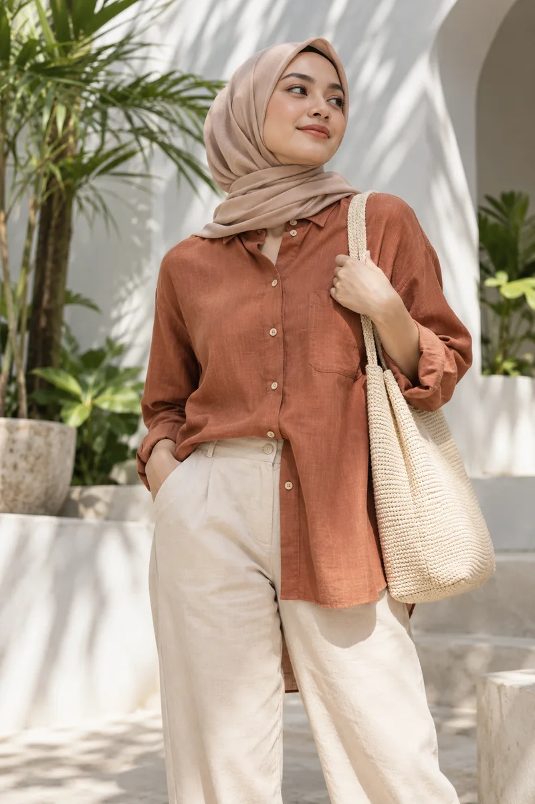
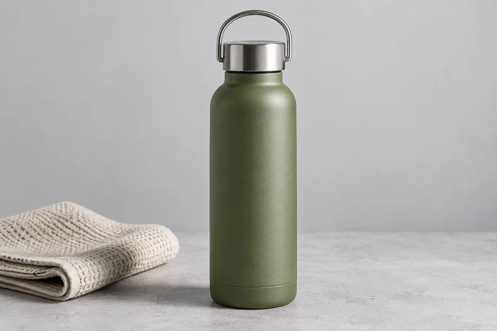
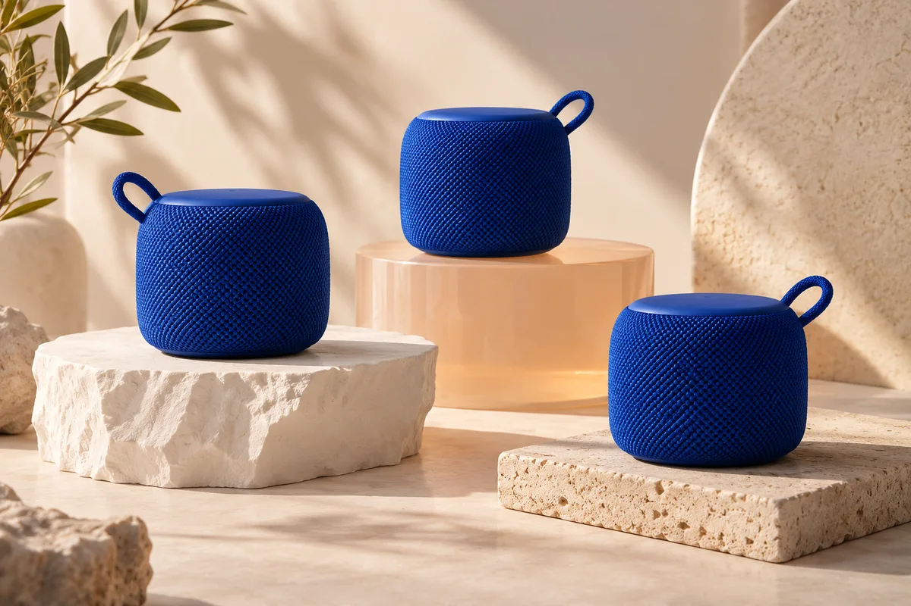

Pembuat Video Iklan AI
Mulai dari gambar produk dan ide pesan. Sebagai AI Video Ad Maker, MAXADZ membantu menyiapkan konsep AI Video Ads untuk menonjolkan produk Anda.
Ubah foto produk menjadi video ads dan gambar iklan profesional dengan AI. Cocok untuk seller Shopee, TikTok Shop, brand, dan kreator konten. Tanpa perlu syuting atau editing.

Dari foto produk ke cerita visual. Gunakan AI Video Generator untuk merancang gerakan, suasana, dan pesan promosi melalui satu alur kreasi.
Mulai dari gambar produk dan ide pesan. Sebagai AI Video Ad Maker, MAXADZ membantu menyiapkan konsep AI Video Ads untuk menonjolkan produk Anda.
Gunakan AI Product Video Generator untuk merencanakan pembukaan, detail produk, dan ajakan membeli dalam satu konsep video promosi.
Alur AI Image to Video Generator dimulai dari referensi produk. Jelaskan gerakan kamera dan suasana yang ingin digunakan pada video.
Susun variasi ide untuk peluncuran atau promosi musiman. AI Marketing Video Generator membantu mengembangkan materi dari referensi dan pesan yang sama.


Buat Foto Produk AI untuk katalog, poster, dan materi promosi. Tentukan konteks produk dan komposisi visual yang ingin Anda jelajahi.


Contoh komposisi untuk katalog dan promosi produk.
Unggah referensi produk, lalu tentukan latar, pencahayaan, dan rasio gambar. Buat konsep foto yang sesuai dengan arah visual toko Anda.
Jelajahi visual untuk produk kecantikan, aksesori, dan kebutuhan sehari-hari. Gunakan hasilnya sebagai bahan tinjauan sebelum menyiapkan materi publikasi.
Siapkan AI Product Ads untuk toko online dengan foto produk, pesan promosi, dan gaya yang konsisten.
Mulai dari kebutuhan toko Anda: peluncuran produk, katalog, atau promosi. AI untuk Jualan Online membantu menyatukan referensi dan ide dalam satu proses kreatif.
Buat Iklan Produk dengan AI menggunakan foto dan pesan produk Anda. Alur AI E-commerce Ads Generator membantu mengeksplorasi materi untuk berbagai kebutuhan toko.

Rancang konsep vertikal dengan pembukaan yang jelas, sorotan produk, dan ajakan bertindak untuk audiens video pendek.

Kembangkan konsep peluncuran dan promo toko dari referensi produk. Tinjau detail, harga, dan klaim sebelum materi dipublikasikan.
Dari satu ide kampanye ke beberapa arah visual. Siapkan materi yang dapat ditinjau dan disesuaikan dengan identitas brand.

Gabungkan referensi, pesan utama, dan suasana visual untuk kebutuhan brand maupun kreator. Simpan ide yang ingin dikembangkan pada kreasi berikutnya.
Eksplorasi sudut kamera, komposisi, dan pendekatan kreatif dari sebuah brief. Bandingkan hasil untuk menentukan arah kampanye yang paling sesuai.
Rencanakan variasi materi untuk kanal sosial dengan pesan yang konsisten. Sesuaikan rasio dan arah visual dengan kebutuhan publikasi Anda.
MAXADZ adalah AI Ads Generator yang menghubungkan referensi produk, ide kreatif, dan riwayat hasil dalam satu tempat.

Pilih mode video atau gambar. Unggah foto produk dan referensi yang membantu menjelaskan arah visual.

Tulis pesan utama, suasana, dan komposisi. Gunakan Generator Iklan AI untuk mengembangkan ide menjadi konsep visual.

Buka riwayat kreasi untuk membandingkan hasil. Gunakan kembali referensi atau publikasikan karya sebagai template untuk kreasi berikutnya.
Satu alur untuk video promosi dan foto produk. Tinjau setiap hasil, lalu sesuaikan detailnya sebelum digunakan untuk iklan.
Mulai membuat